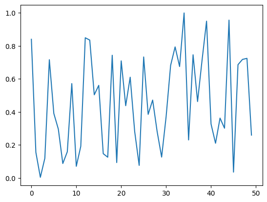
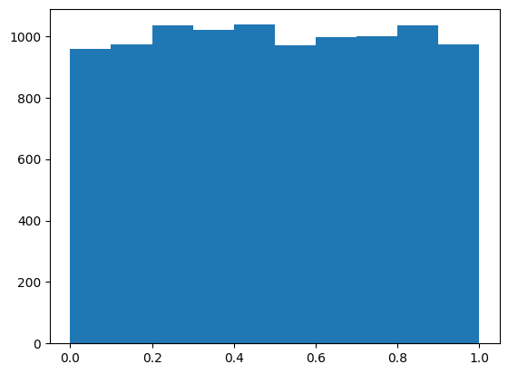

from pathlib import Path
import pickle, gzip, math, os, time, shutil, matplotlib as mpl, matplotlib.pyplot as pltMatrix multiplication from foundations
MNIST_URL='https://github.com/mnielsen/neural-networks-and-deep-learning/blob/master/data/mnist.pkl.gz?raw=true'
path_data = Path('data')
path_data.mkdir(exist_ok=True)
path_gz = path_data/'mnist.pkl.gz'from urllib.request import urlretrieve
if not path_gz.exists(): urlretrieve(MNIST_URL, path_gz)!ls -l datatotal 33312
-rw-r--r-- 1 aditya staff 17051982 Oct 26 12:49 mnist.pkl.gzwith gzip.open(path_gz, 'rb') as f:
((x_train, y_train), (x_valid, y_valid), _) = pickle.load(f, encoding='latin')lst1 = list(x_train[0])
vals = lst1[200:210]
vals[0.0,
0.0,
0.0,
0.19140625,
0.9296875,
0.98828125,
0.98828125,
0.98828125,
0.98828125,
0.98828125]def chunks(lst, sz):
for i in range(0, len(lst), sz):
yield lst[i:i+sz]list(chunks(vals, 5))[[0.0, 0.0, 0.0, 0.19140625, 0.9296875],
[0.98828125, 0.98828125, 0.98828125, 0.98828125, 0.98828125]]mpl.rcParams['image.cmap'] = 'gray'
plt.imshow(list(chunks(lst1, 28)))<matplotlib.image.AxesImage>
from itertools import isliceval_iter = iter(vals)list(islice(val_iter, 5))[0.0, 0.0, 0.0, 0.19140625, 0.9296875]list(islice(val_iter, 5))[0.98828125, 0.98828125, 0.98828125, 0.98828125, 0.98828125]list(islice(val_iter, 5))[]it = iter(lst1)
img = list(iter(lambda: list(islice(it, 28)), []))plt.imshow(img)<matplotlib.image.AxesImage>
img[20][15]0.98828125class Matrix:
def __init__(self,x): self.x = x
def __getitem__(self, idxs): return self.x[idxs[0]][idxs[1]]m = Matrix(img)
m[20,15]0.98828125import torch
from torch import tensortensor([1,2,3])tensor([1, 2, 3])x_train, y_train, x_valid, y_valid = map(tensor, (x_train, y_train, x_valid, y_valid))
x_train.shapetorch.Size([50000, 784])x_train.type()'torch.FloatTensor'imgs = x_train.reshape((-1, 28, 28))plt.imshow(imgs[0])<matplotlib.image.AxesImage>
imgs[0, 20, 15]tensor(0.9883)n,c = x_train.shape
y_train, y_train.shape(tensor([5, 0, 4, ..., 8, 4, 8]), torch.Size([50000]))min(y_train), max(y_train)(tensor(0), tensor(9))y_train.min(), y_train.max()(tensor(0), tensor(9))Random Numbers
rnd_state = None
def seed(a):
global rnd_state
a, x = divmod(a, 30268)
a, y = divmod(a, 30306)
a, z = divmod(a, 30322)
rnd_state = int(x)+1, int(y)+1, int(z)+1seed(457428938475)
rnd_state(4976, 20238, 499)def rand():
global rnd_state
x, y, z = rnd_state
x = (171 * x) % 30269
y = (172 * y) % 30307
z = (170 * z) % 30323
rnd_state = x,y,z
return (x/30269 + y/30307 + z/30323) % 1.0rand(), rand(), rand()(0.7645251082582081, 0.7920889799553945, 0.06912886811267205)if os.fork(): print(f'In parent: {rand()}')
else:
print(f'In child: {rand()}')
os._exit(os.EX_OK)In parent: 0.9559050644103264
In child: 0.9559050644103264if os.fork(): print(f'In parent: {torch.rand(1)}')
else:
print(f'In child: {torch.rand(1)}')
os._exit(os.EX_OK)In parent: tensor([0.3511])
In child: tensor([0.3511])plt.plot([rand() for _ in range(50)])
plt.hist([rand() for _ in range(10000)])(array([ 959., 972., 1036., 1019., 1037., 971., 997., 1000., 1036.,
973.]),
array([6.60514437e-06, 1.00005135e-01, 2.00003666e-01, 3.00002196e-01,
4.00000726e-01, 4.99999256e-01, 5.99997787e-01, 6.99996317e-01,
7.99994847e-01, 8.99993378e-01, 9.99991908e-01]),
<BarContainer object of 10 artists>)
5.13 ms ± 355 µs per loop (mean ± std. dev. of 7 runs, 10 loops each)236 µs ± 113 µs per loop (mean ± std. dev. of 7 runs, 10 loops each)Matrix multiplication
weights = torch.randn(784, 10)
bias = torch.zeros(10)m1 = x_valid[:5]
m2 = weightsm1.shape, m2.shape(torch.Size([5, 784]), torch.Size([784, 10]))ar, ac = m1.shape
br, bc = m2.shape
(ar,ac),(br,bc)((5, 784), (784, 10))t1 = torch.zeros((ar, bc))
t1.shapetorch.Size([5, 10])for i in range(ar):
for j in range(bc):
for k in range(ac):
t1[i,j] += m1[i,k] * m2[k,j]t1tensor([[ 12.9630, -10.3799, -16.5003, 11.8395, 8.5769, -13.1003, -3.8864,
-2.5619, -4.2900, -1.9307],
[ 7.0750, -6.2932, 7.1758, 3.0945, 6.4060, 1.7423, -2.6365,
10.3673, -1.5848, -1.3050],
[ 2.2249, 1.2585, 1.2338, 5.4787, 11.0996, -5.3456, 2.1196,
15.0352, 0.4401, -5.8730],
[ 3.8055, 7.7315, -7.6018, -3.8148, 15.5802, -15.5535, 3.7193,
-2.5585, -3.0343, 3.4738],
[ 9.0198, 2.2140, -4.6859, 5.8690, 0.1192, 0.5790, -13.7248,
10.8067, 1.8075, -2.7698]])torch.set_printoptions(precision=2, linewidth=140, sci_mode=False)t1tensor([[ 12.96, -10.38, -16.50, 11.84, 8.58, -13.10, -3.89, -2.56, -4.29, -1.93],
[ 7.08, -6.29, 7.18, 3.09, 6.41, 1.74, -2.64, 10.37, -1.58, -1.30],
[ 2.22, 1.26, 1.23, 5.48, 11.10, -5.35, 2.12, 15.04, 0.44, -5.87],
[ 3.81, 7.73, -7.60, -3.81, 15.58, -15.55, 3.72, -2.56, -3.03, 3.47],
[ 9.02, 2.21, -4.69, 5.87, 0.12, 0.58, -13.72, 10.81, 1.81, -2.77]])import numpy as npnp.set_printoptions(precision=2,linewidth=140)(ar,ac),(br,bc) = m1.shape,m2.shape
(ar,ac),(br,bc)((5, 784), (784, 10))def matmul(m1,m2):
(ar,ac),(br,bc) = m1.shape,m2.shape
c = torch.zeros((ar,bc))
for i in range(ar):
for j in range(bc):
for k in range(ac):
c[i,j] += m1[i,k] * m2[k,j]
return cCPU times: user 779 ms, sys: 7.65 ms, total: 787 ms
Wall time: 814 msElementwise operations
m1.shape, m2.shape(torch.Size([5, 784]), torch.Size([784, 10]))(m1[0,:] * m2[:,0]).sum()tensor(12.96)def matmul(m1,m2):
(ar,ac),(br,bc) = m1.shape,m2.shape
c = torch.zeros((ar,bc))
for i in range(ar):
for j in range(bc):
c[i,j] = (m1[i,:] * m2[:, j]).sum()
return cCPU times: user 3.83 ms, sys: 3.95 ms, total: 7.78 ms
Wall time: 9.05 msfrom fastcore.test import *test_close(t1,matmul(m1,m2))def matmul(m1,m2):
(ar,ac),(br,bc) = m1.shape,m2.shape
c = torch.zeros((ar,bc))
for i in range(ar):
for j in range(bc):
c[i,j] = torch.dot(m1[i,:], m2[:, j])
return c813 µs ± 89.7 µs per loop (mean ± std. dev. of 7 runs, 50 loops each)test_close(t1,matmul(m1,m2))Broadcasting
m = tensor([[1., 2, 3], [4,5,6], [7,8,9]]); mtensor([[1., 2., 3.],
[4., 5., 6.],
[7., 8., 9.]])c = tensor([10.,20,30]); ctensor([10., 20., 30.])m.shape, c.shape(torch.Size([3, 3]), torch.Size([3]))m+ctensor([[11., 22., 33.],
[14., 25., 36.],
[17., 28., 39.]])c + mtensor([[11., 22., 33.],
[14., 25., 36.],
[17., 28., 39.]])c.unsqueeze(0), c[None, :](tensor([[10., 20., 30.]]), tensor([[10., 20., 30.]]))m.shape, c[:,None].shape(torch.Size([3, 3]), torch.Size([3, 1]))c[:,None].expand_as(m)tensor([[10., 10., 10.],
[20., 20., 20.],
[30., 30., 30.]])m + c[:,None]tensor([[11., 12., 13.],
[24., 25., 26.],
[37., 38., 39.]])matmul with broadcasting
digit = m1[0]
digit.shape, m2.shape(torch.Size([784]), torch.Size([784, 10]))(digit[:,None] * m2).sum(dim=0).shapetorch.Size([10])digits = m1[:2]digits.shapetorch.Size([2, 784])digits.shape, m2.shape(torch.Size([2, 784]), torch.Size([784, 10]))digits[..., None].shapetorch.Size([2, 784, 1])(digits[..., None] * m2).shapetorch.Size([2, 784, 10])(digits[..., None] * m2).sum(dim=1).shapetorch.Size([2, 10])def matmul(m1,m2):
(ar,ac),(br,bc) = m1.shape,m2.shape
c = torch.zeros((ar,bc))
for i in range(ar):
c[i] = (m1[i,:,None] * m2).sum(dim=0)
return ctest_close(t1, matmul(m1,m2))The slowest run took 4.91 times longer than the fastest. This could mean that an intermediate result is being cached.
306 µs ± 198 µs per loop (mean ± std. dev. of 7 runs, 50 loops each)tr = matmul(x_train, weights)tr.shapetorch.Size([50000, 10])CPU times: user 1.75 s, sys: 23.5 ms, total: 1.77 s
Wall time: 1.52 s